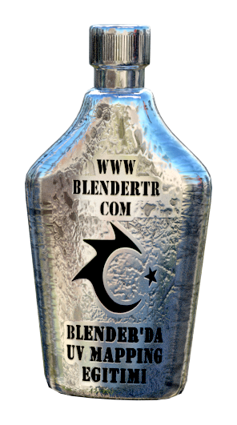
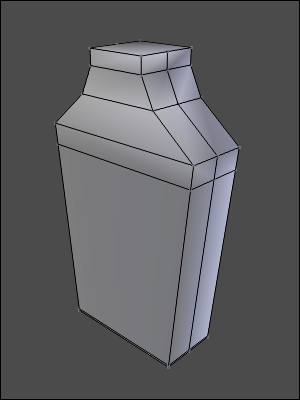
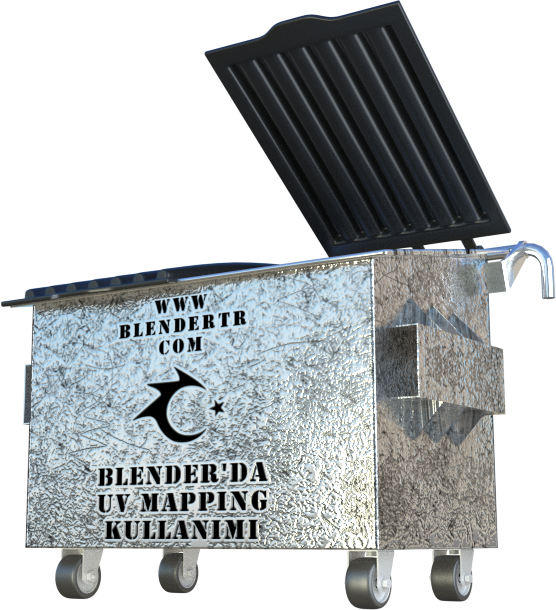
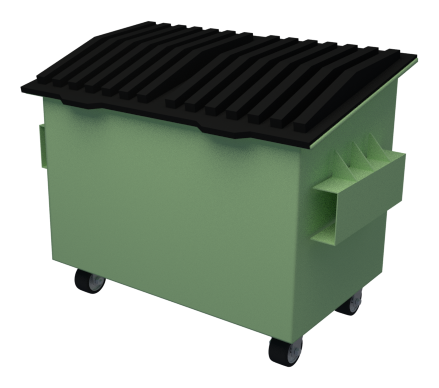

Pzt 26 Aralık 2022
Bölüm 2: Çizim Öğeleri (Objeleri)

Yapı Geometrisi (Yardımcı Geometri)
Normal çalışmada, kullanıcı bir taslakta çizgi ve
eğriler çizer. Bu eğriler üretilecek geometriyi tanımlar; sonuçta parmak
freze, lazer veya başka bir kesici alet, bu eğriler boyunca kesecektir.
Bazı durumlarda son kısımda (geometrinin sonuçlanma
kısmında) görünmemesi gereken bir çizgi (yardımcı çizgi) çizmekte …
Continue reading »
Cts 18 Haziran 2022
Blender UVMaping Eğitimi - 1. Bölüm
UV Map nedir? Ne işe yarar, UV nasıl açılır, UV Map nasıl hazırlanır? konularını anlatmak için hazırlamış olduğum Dokümanın 1. bölümünü istifadenize sunuyorum.

Blender’da UV Mapping Kullanımı isimli anlatımda kullanacağımız Modelimiz, aşağıda gördüğümüz gibi, basit bir Şişe Nesnesidir.

Öncelikle, Model (Nesne) Gövdesinin UV açılımını …
Continue reading »
Cts 18 Haziran 2022
Blender UVMaping Eğitimi - 2. Bölüm
UV Map nedir? Ne işe yarar, UV nasıl açılır, UV Map nasıl hazırlanır? konularını anlatmak için hazırlamış olduğum Dokümanın 2. bölümünü istifadenize sunuyorum.

Bu Dersimizde, Modellemiş olduğum Çöp Konteynerini kullanarak UV Mapping konusuna devam edeceğim.

UV açma işlemine başlamadan önce, bildiğiniz gibi, modelimizi seçiyor ve …
Continue reading »
Prş 10 Mart 2022
Bölüm 9: Bilinen Hatalar ve Sorunlar
Mantıksal (Boolean: ekleme, çıkarma, kesişim)
işlemleri üçgen ağlarda/kafeslerde/mesh (tam NURBS yüzeyleri yerine)
gerçekleştirildiğinde, elde edilen ağ/kafes (mesh) yapısı kalitesi,
genellikle düşük olacaktır. Eğriler farklı şekilde parçalı-doğrusal
olarak yaklaştırılsaydı, daha az üçgenle eşit derecede iyi bir ağ/kafes
yapısı elde edilebilirdi, veya …
Continue reading »
Prş 10 Mart 2022
Bölüm 8: Yapılandırma
Kullanıcı / Malzeme Renkleri
Özellik Penceresi ekranında,
belirli gruplar için (örneğin uzatarak katıla, tam ve kısmi döndürerek
katıla) sekiz renkten oluşan bir palet görüntülenir (User Color (r, g, b)). Bu palet, kullanıcının o grup tarafından oluşturulan herhangi bir yüzeyin rengini seçmesine izin verir.
Bu sekiz renk, bileşenleri ile …
Continue reading »
Prş 10 Mart 2022
Bölüm 7: Dışa Aktarım
Resim olarak dışa aktar...
Bu seçenek, ekranda görüntülenenlerin bitmap
(vektörel olmayan resim) görüntüsünü dışa aktarır. Bu işlem, ekran
görüntüsü almaya eşdeğerdir. Bu seçenek, insan tarafından okunabilir
çıktı üretmek için kullanışlıdır.
Dosya → Resim olarak dışa aktar...'ı seçin. Görüntü, çoğu grafik yazılımının açabileceği bir PNG uzantılı dosya …
Continue reading »
Prş 03 Mart 2022
Bölüm 5: Çizgi Biçimleri
Bir çizginin veya eğrinin rengini, çizgi
genişliğini veya diğer yardımcı çizgi (kozmetik) özelliklerini doğrudan
değiştirmek asla mümkün değildir. Bunun yerine, bir öğenin kozmetik
özellikleri, o öğe bir çizgi biçimine (stilini) atanarak belirtilebilir.
Biçim rengi, çizgi genişliğini, metin yüksekliğini, metin kaynağını,
metin dönme açısını ve bir nesnenin …
Continue reading »
Cts 26 Şubat 2022
Bölüm 6: Analiz
İzlenecek Nokta
SolveSpace, bir nokta hareket ederken, noktanın
arkasında bir "iz" çizebilir. Bu, mekanizma tasarlanırken kullanışlı bir
yöntemdir. Aşağıda gösterilen çizim üç çubuklu bir bağlantıdır:

Şekildeki bağlantılı kollara sahip sistem
çalışırken, orta bağlantının merkez noktası, turkuaz renkli eğri boyunca
hareket eder. Bu görüntü, bağlantılı kollar çizildikten sonra …
Continue reading »
Prş 24 Şubat 2022
| Kısayol Tuşu |
Kısayol Tuşu Açıklaması |
| CTRL N |
Yeni Dosya Oluştur |
| CTRL O |
Dosya Aç |
| CTRL S |
Çalışmayı Kaydet |
| CTRL SHİFT S |
Çalışmayı Farklı Kaydet |
| CTRL P |
Yazdır |
| CTRL W |
Çizimi Kapat |
| CTRL SHIFT W |
Tüm Açık Çizimleri Kapat |
| CTRL Q |
LibreCAD Programını Kapat |
| CTRL Z |
Geri Al (Undo) |
| CTRL SHIFT … |
Continue reading »
Paz 13 Şubat 2022
FreeCAD için Python ile Komut Dosyası Oluşturma (Scripting) Eğitimi
Continue reading »